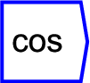

Next: tan
Up: Functions/Unary Operators
Previous: sin
Contents
Produces a cosine function of the input.

The operator can be placed on the canvas in two ways:
- From the Functions (``function'') toolbar; or
- By typing the letters ``cos'' on the canvas and then pressing the
Enter key.
For example, connecting a ``time'' block to this function, and then
to a graph, will produce a cosine wave. For further explanation regarding
trigonemtric functions, see Wikipedia's page on trigonometric functions.